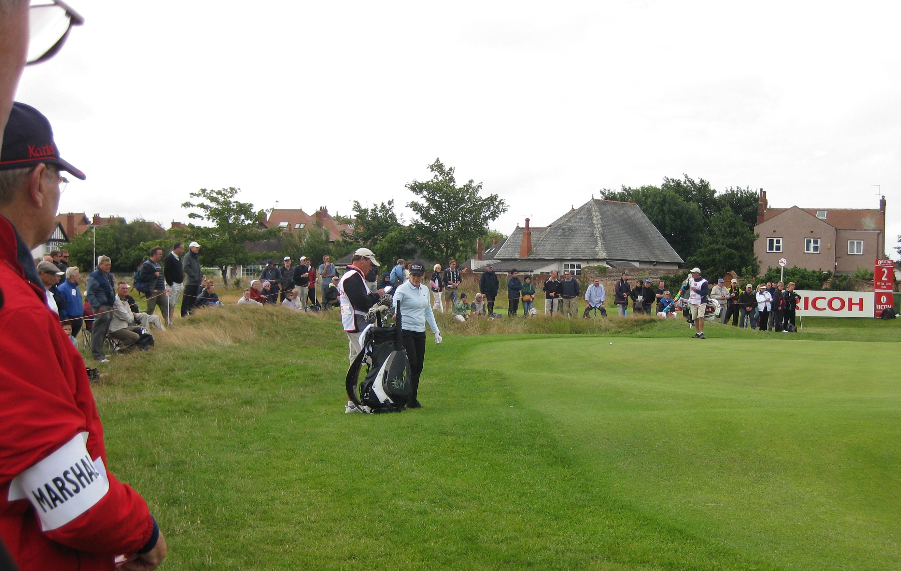
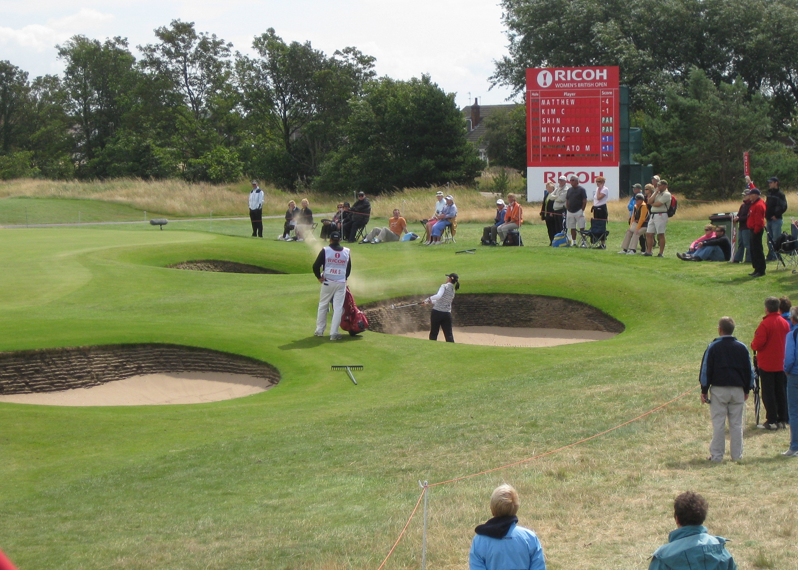
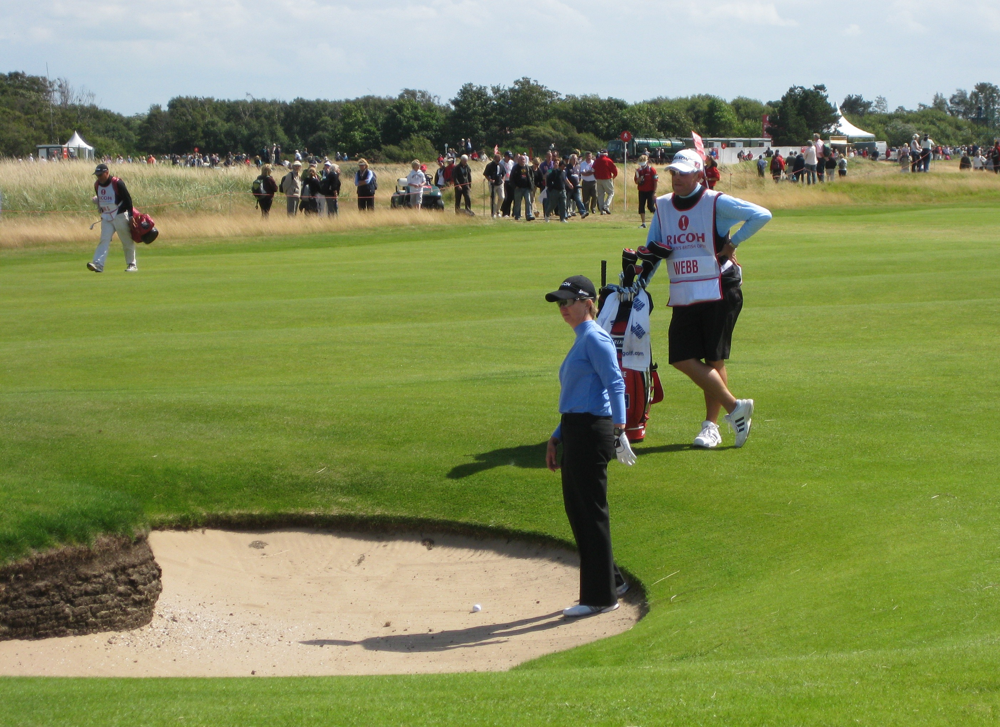
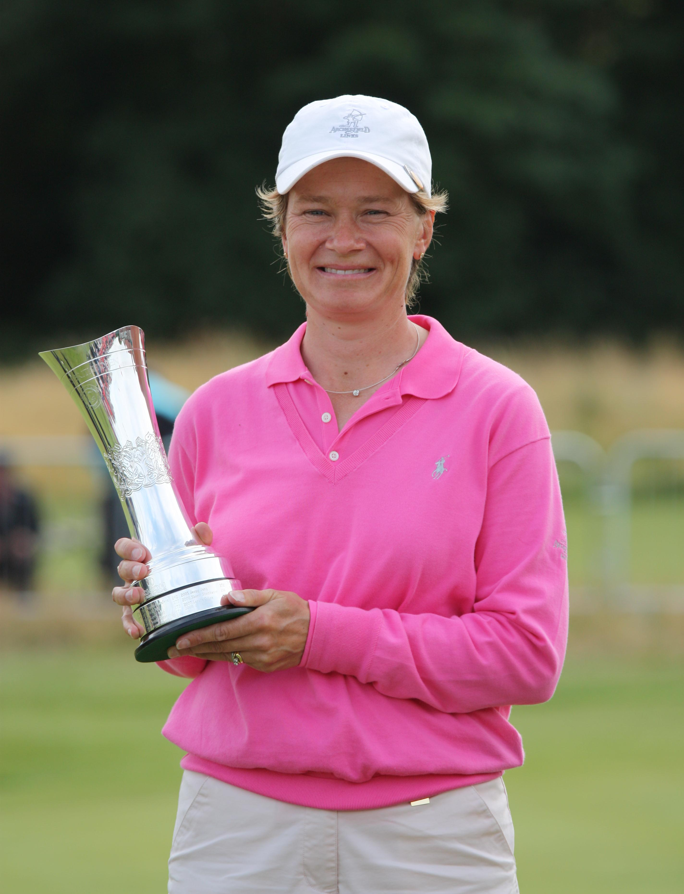
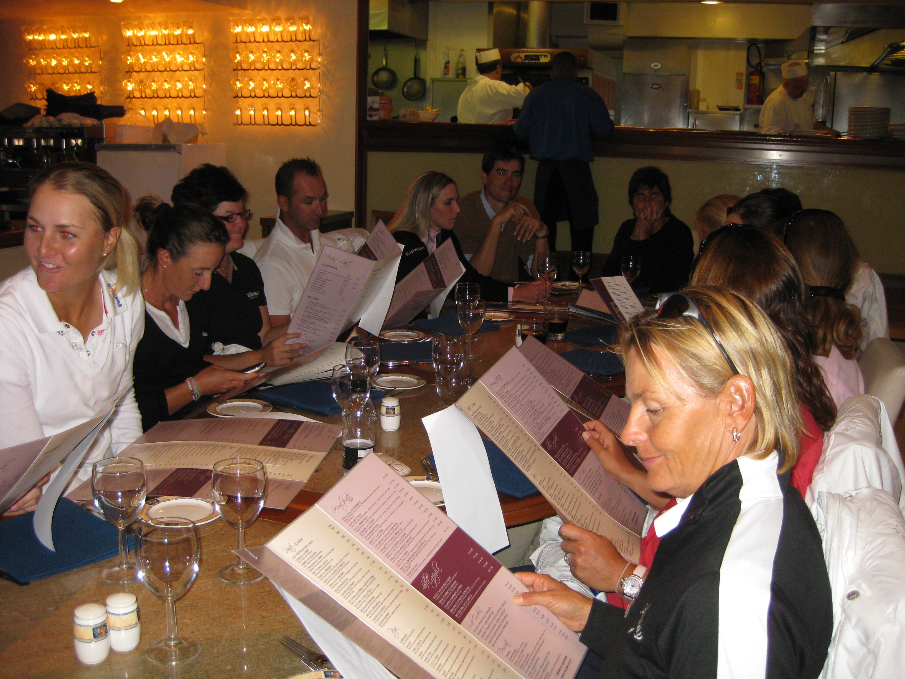

|
|
|
Women's British Open - Sunday August 2nd - Day 4
The Inn on the Prom's website needs to update its directions since the demise of Woolies. There was one parking spot left for me. The walk to the club was about as long as the walk from the clubhouse to the public carpark. Had to go in the pedestrian entrance, and then had to go out of my way to get a drawsheet, but at least I could check out the giant scorebard straight away. Was on my way to see Lorena tee off the first when realised that Larry was coming down 18. He and Kris Tamulis were the first out at 6.50am (after she took a 12 at the 6th the previous day) and were finishing off in 3 hours flat. She made sure to give a signed golf ball to the walking scorers who had gone round the course with her. Larry was accosted for his caddies bib which amused him. Whilst she was signing her card, Larry took off his waterproof coat and stuffed it into the nearest bin. He said he was also going to dump the waterproof trousers and trainers before he went home. He was off to stay the night in an airport hotel before flying home. As soon as Kris emerged from the scorers hut, Ron Sirak pounced to ask her exactly what conditions were like out there, and how they were different from the previous day. Easier than going out and walking the course for himself I suppose.
{kind=link}
Went over to the first green to see Lorena and JJ tee off. JJ went first, landed the ball short of the green, got a good bounce up onto the green and the ball then just rolled towards the hole and at the last minute dropped into the hole for a hole in one. She had a mega smile on her face when she arrived on the green, and got a large round of applause. Got another good clap when she retrieved her ball. She then gave us a round of applause. Or maybe she was clapping herself! Lorena tried the same shot but didn't get the same bounce and came up short. She left herself a testy par putt which she took ages over but finally made.
Next up were Hur and Wie, together for the 2nd day running. Both tried to repeat JJ's shot but Wie was short and Hur pin high but wide right. Neither made birdie. Next up was Michelle Redman and Becky Morgan who were both on the green but not close. Redman is a fussy bugger. Her caddie, Coffee Joe, was asking for silence whilst she was prowling around the green not just when she was about to hit the shot.
Yuri Fudoh's tee shot landed close to where JJ's ball had landed but took off like a scalded cat.It would have run off the back of the green if it handn't hit the flagpole and almost dropped in. She was left with a tap in birdie. Yani was not so lucky. She ended up in a front greenside bunker and ended up making bogey.
Cristie Kerr was next up. She landed her ball too far onto the green and ran off the back into the first cut. Her chip back onto the green was a little clumsy and she didn't make her par putt. Not a happy bunny. Brittany Lincicombe was finishing her round on 18 behind us. She was 3 under par but in one of the horrid fairway bunkers. She made a great up and down.
I followed the Kerr/Eberl group down the 2nd and 3rd holes and then wandered around to my usual spot overlooking the 6th hole. Michelle Wie had hit a fabulous drive into position A on the sixth and her second shot ran up onto the back of the green to give her a very makeable eagle put. Mum was very exited about it and shouted "Great shot Michelle". God knows if Michelle could hear as she was way down the fairway. She didn't make the eagle put but had a simple tap in bridie.
Becky Morgan's second shot was a tad wayward and ended up on the upslope of the mound I was standing on, practically in touching distance. She made her par from there. Michelle Redman was even fussier on the 6th green. Three spectators were standing at the back of the 6th green minding their own business standing still. Redman wasn't happy because they were in her putt line and shouted at them to move! Much comment in the crowd that it was just as well she wasn't a very successful and popular player who had to deal with a green totally surrounded with people all day long.
 Yuri Fudoh and Yani were next up. Yani put her second shot in the deep front left greenside bunker. When she saw her lie she put her hands on her hips in frustration. She got out OK but didn't get her birdie. Martina Eberl hit her tee shot into somewhere nasty and had to just chip out onto the fairway. Cristie Kerr had hit hers onto the mound on the left side of the fairway. She went for it but pulled it short and left into a really deep fairway bunker. Eberl nearly followed her in, but just stopped on the top of the bunker mound. All Kerr could do was come out of the bunker sideways which she did OK. She then gave her golf bag an almighty kick. She was steaming. She did make her par.
{kind=link}
Wandered off to get a bacon roll and caught up with Lorena Ochoa and JJ making their way onto the 12th tee and then with Michelle Wie playing onto the 11th green. She was short of the green in 2, hit a lovely little chip shot onto the green but missed the birdie putt. She had got it to 4 over so she was 3 under for the day. Made my way back to my spot on the sixth as Mimi's group played thru.
Karrie played a great second shot landing short of the green and running up onto the green. Se Ri put it in a RHS greenside bunker. Karrie only just missed her eagle putt. She had a tap in birdie. Se Ri got her par. Saw Creamer going through the 3rd green clad in her usual pink but not using her Sunday pink ball. Having had a sit in the sun for a bit to rest my weary legs and feet, I checked out Yuri Fudoh and Yani Tseng teeing off on the 14th before getting a new perspective on the 6th by watching play from the back of the green. Michelle Redman had already gone through so I reckoned I was safe.
Xtina's second shot came up short of the green. Her third shot was a little clumsy and ran on a good distance past the hole. She didn't make the birdie putt and we had the classic Xtina knee bend reaction. Beany pulled her second shot way left into the crowd on a mound to the left of the 6th green. Her pitch out didn't go very far, landing on a very narrow strip of ground between 2 greenside bunkers. From there she hit a nice pitch and made the par putt.
Moved round to the back of the 13th green as Karrie and Se Ri appear. There was a bit of a moment with one of the marshalls. She had been running round the place handing out cups of coffee but then decided it was time to take her rainpants off. She was a large lady and was therefore blocking the view of a number of people who had been sat at that spot all day. The crowd asked her to move, politely, but she just looked at them. Someone did say she made a better door than a window. She still wasn't moving until someone pointed out all the spots around the green that marshalls had access to that we didn't. She chuntered a little but moved off and leant against a tree where she wasn't blocking anyones view.
 Wandered off down the 14th to go to the loo over the 15th tee crossing point. No queue and nice and clean. Karrie and Se Ri were playing the hole when I got back to the 14th green. Karrie put her 2nd shot into the front left bunker but got up and down for her par. Se Ri was in the right front greenside bunker but she didn't get up and down. No sign of the Aussie lasses. Once their walking crowd had left, I found a place to sit down to watch the final groups coming through in front of a big scoreboard. Saw that Beany was still at -2 and that Hee-Won Han and Creamer had got it to +1 whilst Ai-chan was one shot back at -1. Next thing Beany has dropped a shot on 10 so is tied with Ai-chan for the lead.
{kind=link}
Giulia Sergas looked to have hit a good shot onto 14 but it transpired she had been in a fairway bunker and what had seemed like a par putt was actually for bogey. Next thing we knew there was a huge cheer from down at the 15th green. Turns out Karrie had made eagle at 15. Whilst Jane Park was finishing off 15 the scoreboard changed again. Karrie had made birdie on 16 to get it to level par only one shot back. Thought that might be a very good and maybe a winning score if she could get it to the clubhouse.
Creamer made her par on 14. Morimizato having already fallen out of contention, made a lovely up and down from the front greenside bunker. Song-Hee Kim and Mika Miyazato were both out of contention. Kim got par, Mikan a bogey. Huge cheers from what sounded like the 13th green as Ai-chan hit a great putt that grazed the hole. Two changes on the scoreboard as a result. Ai-chan had bogeyed and Beany had got a birdie on 13.
 Beany's ball appeared on the very front of the 14th green. We all hoped like hell that it was there in 2. Another cheer at 15 and another change on the scoreboard. Creamer had made birdie to also get to level par. 2 shot lead for Catriona over 4 players, one of whom was Xtina. She hit her approach shot, hated it and dropped her club immediately. The guy behind me remarked "Oh the Japanese lady just threw her club". Wrong in so many ways. Xtina just missed the front greenside bunker on 14. Catriona hit her 40 foot birdie attempt which rolled along beautifully and dropped straight into the hole. Enormous cheer from all and sundry and big smile on Catriona's face. 3 shot lead but with 4 difficult holes still to go. Xtina hit an OK pitch and run shot, shouting at it "What are you doing?" The par putt just failed to drop. Another deep knee bend reaction from her. Next thing the scoreboard changed again. Karrie was in the clubhouse on par, a good target but no longer looking like a winning score but Creamer had birdied 16 as well to get to -1. Catriona's lead down to 2 shots.
{kind=link}
Didn't follow the great masses down the fifteenth with Beany. Headed back to the tented village and the big screen. By the time I got there Catriona had played and birdied the 15th. 3 shot lead with three holes to play. Was headed off towards the 18th green but the Aussies were headed towards me. They said you couldn't see a thing so I grabbed the bench in front of the screen for the three of us.
Beany played the 16th very steadily and got her safe par. Then saw that Paula was in a horrid spot on the 18th. She was caught up in the grass that was fronting a fairway bunker. All she could do was chop it back out to the fairway. Having done that she hit a horrid third shot that shot through the back of the green and ended up by the clubhouse wall. She hardly had a swing and almost knocked the next off the front of the green. Two putts later, a double bogey on the card and her major championship chances were over once again amd Catriona's lead was back to 4 shots.
She used one of those shots on the 17th having hit into the Bobby Jones bunker with her tee shot. So 3 shot lead with 1 hole to play. Good tee shot into the fairway and approach shot onto the 18th green and it was hers. Xtina was walking alongside her giving her a big clap and egging on the crowd who needed no such encouragement. Beany could 4 putt from here and still win. She only needed two putts, leaving herself a two incher for the win.
 Beany wins. Karrie in 2nd on her own. Queue one happy bench. The Aussies went back to the hotel as they had some pre-packing shopping to do. I stayed for the presentation and agreed to meet them at their hotel at 5.45pm. Whilst all the bigwigs were making long winded speeches, Ai-chan, Xtina and Catriona were working the autographs line signing everything put in front of them. Xtina had a baby thrust at her. She had to sign his sunhat. He was not too chuffed at that and she was really upset that he was upset. Catriona was given a Winners Thank You crib sheet so she got all the sponsors names right. She started her speech by thanking the crowd for all the support she'd been given and then moved onto her crib sheet. She ended her speech by thanking Graham for helping keep her spirits up when she got anxious and bad tempered, and then said Hi to her daughters, Katie and Sophie who were watching on TV. She got her photo taken in the classic pose sitting on the edge of a pot bunker and after a bit Graham joined her.
{kind=link}
Tramped off back to the Inn on the Prom and then onto the Tiggis restaurant. It reminded me very much of San Carlo in Bristol. We had a bottle of One Tree Hill, Cabernet Shiraz from Adelaide, SE Australia which is made literally just around from where Myranwy lives.
Whilst we were waiting for the bill, Mimi Hjorth and Tutta arrived. Seemed strange that Tutta wasn't with her Mum. Next minute the reason became clear. Alison Nicholas appeared along with Gwladys Nocera, Soph, Alfie, Anna Nordqvist and Becky Brew. The recently announced Euro Solheim Cup team was having a bonding meal out. I took one photo but no more as I didn't want to intrude. Walked back to the car, said good bye to Myranwy and Maurine and that was the British Open over for another year.